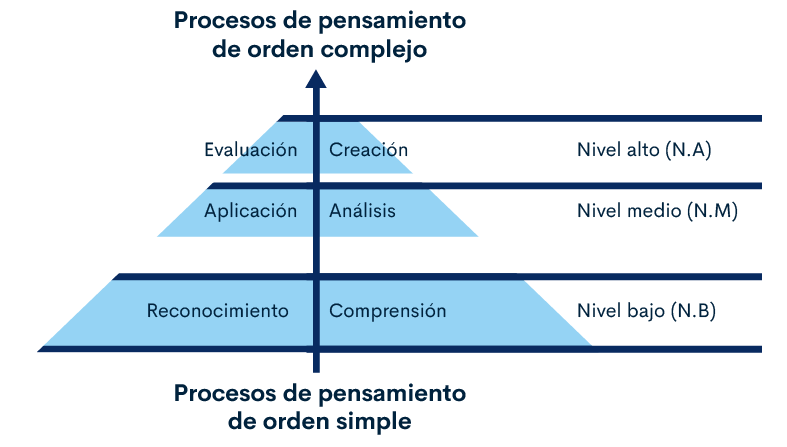

1. Estructura Funcional de la Ocupación (EFO)

Son el conjunto de Normas Sectoriales de Competencia Laboral (NSCL) que permiten el logro del propósito de una ocupación. En ella se describe lo que se hace en una ocupación, en qué tipo de organizaciones o sectores se desempeña el trabajador, el nivel de cualificación y las funciones laborales que se desarrollan en la misma. Corresponde a una ocupación e incluye las denominaciones o empleos y las funciones que se desempeñan en ella.
1.1 Nivel de cualificación
Hace referencia a la complejidad de las funciones, el nivel autonomía y responsabilidad en el desempeño de una ocupación en relación con otras. Además de la cantidad, tiempo y nivel de educación, capacitación y experiencia requeridas para su desempeño.
1.2 Componentes normativos

Corresponde a la estructura de las normas tales como: actividades claves, conocimientos esenciales, criterios de desempeño específicos, generales y evidencias requeridas.


Anexo. Consulta normas y estructura funcional de la ocupación
1.3 Norma de Competencia Laboral (NCL/NSCL)
Una norma de competencia laboral es un estándar reconocido que describe los resultados que un trabajador debe lograr en el desempeño de una función laboral.
A continuación, encontrará un mapa mental con la descripción de los diferentes conceptos de la estructura de una norma sectorial, al dar clic ampliará la información de cada uno de ellos.

Actividades claves.
Acciones indispensables que contribuyen al desempeño de una función.
Criterios de desempeño específicos.
Descripción de los requisitos de calidad para el resultado obtenido en el desempeño laboral.

Criterios de desempeño generales.
Son los requisitos de calidad relacionados con aspectos de gestión del riesgo, seguridad y salud en el trabajo, gestión de información, gestión ambiental, u otros que apliquen a la función en su totalidad.
Conocimientos esenciales.
Teorías, principios o conceptos que debe comprender y aplicar el trabajador, para el desempeño de la función.

Evidencias.
Aspectos que permiten a una persona demostrar que es competente en el desempeño de una función.

Evidencias de desempeño directo.
Son acciones reales que se evidencian directamente en la ejecución de la función productiva por parte del candidato, y que permiten demostrar el cumplimiento de los parámetros de calidad establecidos en los criterios de desempeño definidos en el referente de evaluación (NSCL).

Evidencias de producto.
Resultado del desempeño observado y valorado o descrito en el referente de evaluación (NSCL).
Evidencias de conocimiento.
Se refiere a aplicación de las teorías y principios de base científica, así como a las habilidades cognitivas en relación con la función.
Lo invitamos a profundizar los conceptos anteriormente mencionados en el glosario del componente formativo.
2. Instrumentos de evaluación
Son herramientas de evaluación y medición construidas bajo metodologías definidas por el SENA que permiten la recolección y valoración de evidencias determinadas en un estándar de competencia laboral.
2.1 Tipos de instrumentos
Son herramientas de evaluación y medición construidas bajo metodologías definidas por el SENA, que permiten la recolección y valoración de evidencias determinadas en un estándar de competencia laboral. A continuación, encontrará la descripción de los tipos de instrumentos:

Prueba de conocimiento: instrumento de evaluación conformado por un conjunto intencionado y articulado de ítems que responden a los propósitos planteados en la estructura de la Norma de Competencia Laboral (NCL) o Norma Sectorial de Competencia Laboral (NCSL) y cuya aplicación permite evaluar el conocimiento del candidato.
Lista de chequeo de desempeño: es un instrumento que permite al evaluador de competencias laborales recolectar datos observables del candidato en el desempeño de una función productiva, verificando de una manera estructurada el cumplimiento de los requisitos establecidos en el referente de evaluación.
Lista de chequeo de producto: es un instrumento que permite al evaluador de competencias laborales recolectar información de los resultados de producto del candidato en una práctica laboral, verificando de una manera estructurada el cumplimiento de los requisitos establecidos en la norma de competencia laboral.
2.2 Fases de elaboración
Para el diseño y elaboración de instrumentos, se tienen establecidas las siguientes fases:

3. Fases de Alistamiento y planeación
Para esto el Grupo Evaluación y Certificación de Competencias Laborales (GECCL) ha definido seis (6) matrices las cuales están publicadas en la plataforma Compromiso.
3.1 Alistamiento
La fase de alistamiento es la primera etapa del proyecto de instrumentos, es responsabilidad del gestor de instrumentos en coordinación con el líder del Proceso de Evaluación y Certificación de Competencias Laborales (PECCL) de cada centro de formación.
Esta fase permite contemplar el talento humano, los recursos físicos y tecnológicos necesarios para el proyecto de instrumentos. Los recursos se clasifican en:
Humanos: gestor de instrumentos, experto técnico constructor (evaluador), experto técnico revisor, líder del PECCL.
Físicos: normas de competencia laboral, formatos de matrices de planeación y construcción de ítems e indicadores de desempeño y producto, formatos de verificación metodológica y verificación técnica de ítems e indicadores de desempeño y producto, tabla de correlación.
Tecnológicos: equipo de cómputo, aplicativo Evaluación y Certificación de Competencias Laborales (ECCL).
3.2 Planeación
La validez de las puntuaciones y la fiabilidad de los instrumentos dependen, entre otras cosas, de la planeación. En esta fase se determina el número de ítems a construcción a través de la Tabla de Correlaciones (TC).
Tabla de correlaciones
En la siguiente presentación se dará a conocer la información relacionada a la tabla de correlaciones.
Matrices de planeación y construcción de ítems e indicadores de desempeño y producto
A continuación, a través de un video se le orientará para realizar el diligenciamiento del formato GCC-F-048 correspondiente a la matriz de planeación y construcción de ítems para normas NSCL.
Ejercicio práctico
A continuación se propone un ejercicio práctico. El ensamble de la información de la norma NSCL en los formatos de las matrices de indicadores de desempeño y producto, son similares. Se realizará la actividad de planeación con la matriz de indicadores de desempeño GCC-F-050. El número de indicadores en la planeación lo define los indicadores de desempeño específicos y generales establecidos en la norma.
Para el ejercicio propuesto los indicadores de desempeño específicos son 12 y 2 criterios de desempeño generales, que deberán ir en cada una de las filas correspondientes.
Debe dar clic en el icono del ejercicio práctico para visualizar el documento.
Selecciona la información y llévela con clic sostenido hacia el formato de la matriz, deberá soltar el clic cuando la información este ubicada en la casilla correspondiente.

En el video anterior, se mencionó que en la planeación para la construcción de ítems se contempla otros aspectos relacionados, como son: la constante de construcción, la categoría del pensamiento, tipos de formatos del ítem y tiempos de respuesta.
La constante de construcción está determinada en la tabla de correlaciones y para entender este proceso visualice el siguiente video de la Taxonomía de Bloom.
¿Qué es la Taxonomía de Bloom?
La taxonomía del pensamiento se basa en la idea, de que las operaciones mentales pueden clasificarse en seis niveles de complejidad creciente en donde cada nivel depende de la capacidad del sujeto para desempeñarse en el nivel o los niveles precedentes, lo que implica operaciones mentales diferentes.
Estos niveles en que está dividida, van de lo más simple a lo más complejo. Se evidencian en la siguiente pirámide:
Para la construcción de ítems en competencias laborales son aplicables los siguientes niveles:
- Reconocimiento: recordar y reconocer información, datos.
- Comprensión: entender, interpretar, comprender la información.
- Aplicación: utiliza información para realizar una tarea o actividad.
- Análisis: clasifica, diferencia y descompone un problema en sus partes para identificar sus componentes.
Los niveles de evaluación y creación no son aplicables para evaluar normas de competencia laboral.
De acuerdo a la metodología de cada nivel se establecieron los siguientes tipos de formatos de ítems.
| Categoría de pensamiento | Formatos recomendados |
|---|---|
| Reconocimiento |
|
| Comprensión |
|
| Aplicación |
|
| Análisis |
|
Para profundizar las categorías de pensamiento anteriormente mencionadas y los ejemplos de los formatos de los ítems, debe ingresar al instructivo que se encuentra en compromiso SENA a través del siguiente enlace. www.sena.edu.co
4. Confidencialidad
Proteger la información obtenida en cada una de las fases del proceso y nunca divulgarla sin la debida autorización.
4.1 Cadena de custodia
Es el mecanismo que salvaguarda, asegura la confidencialidad y administración de los instrumentos de evaluación a lo largo de su ciclo de vida. En la cadena de custodia están incluidos los actores que intervienen directamente en la construcción, administración y aplicación de instrumentos.
4.2 Acuerdo de confidencialidad
Es un contrato por medio del cual las partes se comprometen a no revelar la información confidencial relacionada al PECCL, garantizando la reserva de los datos que le serán suministrados. Dar clic sobre el icono del PDF para visualizar el documento.
Anexo. Acuerdo de confidencialidad para el proceso de ECCL
Glosario
Actividades clave (AC):acción indispensable que contribuye al desempeño de una función. El conjunto de actividades claves permite desarrollar la totalidad de una función productiva, Norma Sectorial de Competencia Laboral (NSCL).
Cadena de custodia:es el mecanismo que salvaguarda, asegura la confidencialidad y administración de los instrumentos de evaluación a lo largo de su ciclo de vida. En la cadena de custodia están incluidos los actores que intervienen directamente en la construcción, administración y aplicación de instrumentos.
Competencia:demostrada capacidad para utilizar conocimientos, destrezas y habilidades personales, sociales y metodológicas, en situaciones de trabajo o estudio y en el desarrollo profesional y personal .
Competencia laboral:capacidad efectiva para llevar a cabo exitosamente una actividad laboral plenamente identificada. La competencia laboral no es una probabilidad de éxito en la ejecución de un trabajo, es una capacidad real y demostrada.
Conocimientos esenciales (CO):hace referencia a las teorías, principios o conceptos que debe comprender y aplicar el trabajador, para el desempeño de la función y que están relacionados directamente con los criterios de desempeño (generales y específicos).
Criterios de Desempeño Específicos (COE):descripción de los requisitos de calidad para el resultado obtenido en el desempeño laboral, Son la base para que un Evaluador de Competencias Laborales juzgue si un trabajador es, o aún no es competente, permiten precisar acerca de lo que se hizo y la calidad con que fue realizado.
Criterios de desempeño generales. (CDG):son los requisitos de calidad relacionados con aspectos de gestión del riesgo, seguridad y salud en el trabajo, gestión de información, gestión ambiental, u otros que apliquen a la función en su totalidad.
Cuestionario:es un instrumento de evaluación conformado por un conjunto intencionado y articulado de ítems que responden a los propósitos planteados en la estructura de la Norma de Competencia Laboral o Norma Sectorial de Competencia Laboral y cuya aplicación permite evaluar el conocimiento del candidato.
Estructura funcional de la ocupación (EFO):conjunto de Normas Sectoriales de Competencia Laboral que permiten el logro del propósito de una ocupación. Está conformada por el resumen de EFO y las NSCL. En ella se describe lo que se hace en una ocupación, en qué tipo de organizaciones o sectores se desempeña el trabajador, el nivel de cualificación y las funciones laborales que se desarrollan en la misma. Corresponde a una ocupación e incluye las denominaciones o empleos y las funciones que se desempeñan en ella.
Evaluación:proceso que valora el cumplimiento de los requisitos de los referentes de evaluación por parte de un candidato.
Evidencias de conocimiento:se refiere a la aplicación de las teorías y principios de base científica, así como a las habilidades cognitivas en relación con la función.
Evidencias de desempeño:son acciones reales que se evidencian directamente en la ejecución de la función productiva por parte del candidato, y que permiten demostrar el cumplimiento de los parámetros de calidad establecidos en los criterios de desempeño definidos en el referente de evaluación. Se valora a través de un conjunto de indicadores de desempeño, expresados en una lista de chequeo (Ver GCC-F- 032 Lista de Chequeo de Evidencia de Desempeño/ Producto de evaluación y certificación de competencias laborales). Estos se presentan y valoran en el sitio real de trabajo o en el ambiente definido por el SENA. (Ver GCC–I–003 Instructivo para la recolección de evidencias de conocimiento, desempeño y producto de evaluación de competencias laborales).
Evidencias de producto:corresponde al resultado del desempeño observado y valorado o descrito en el referente de evaluación. Se valora a través de un conjunto de indicadores, expresados en una lista de chequeo (ver GCC – F- 032 Lista de Chequeo de evidencia de desempeño/ producto de evaluación y certificación de competencias laborales).
Los productos presentados por el candidato (en cualquier medio) permanecerán en el expediente y serán revisados por el Verificador de ECCL (sin emitir ningún juicio) y una vez finalizado el proceso, dichas evidencias son regresadas a los candidatos. (Ver GCC-I-003 Instructivo para la recolección de evidencias de conocimiento, desempeño y producto de evaluación de competencias laborales).
Evidencias requeridas:aspectos que permiten a una persona demostrar que es competente en el desempeño de una función. Corresponde a pruebas definidas y manifiestas del desempeño y conocimiento que determina la competencia laboral de una persona.
Instrumentos de evaluación:herramientas de evaluación y medición construidas bajo metodologías definidas por el SENA que permiten la recolección y valoración de evidencias determinadas en un estándar de competencia laboral.
Nivel de cualificación:jerarquía que está definida por la complejidad de las funciones, el nivel de autonomía y responsabilidad en el desempeño de la ocupación en relación con otras y, por consiguiente, la cantidad, tipo y nivel de educación, capacitación y experiencia requeridos para su desempeño.
Norma de Competencia Laboral (NCL):estándar referido a una función productiva que en conjunto, puede conformar un perfil técnico o titulación.
Norma Sectorial de Competencia Laboral (NSCL):estándar reconocido a nivel nacional que describe los resultados que un trabajador debe lograr en el desempeño de una función laboral, los conocimientos que aplica y las evidencias requeridas para demostrar su competencia.
Referencias bibliográficas
Servicio Nacional de Aprendizaje. (2018). Guía para la normalización de competencias laborales.
Servicio Nacional de Aprendizaje. (2019, noviembre). Guía para evaluar y certificar competencias laborales.
Servicio Nacional de Aprendizaje. (2019). Instructivo para la planeación y construcción de ítems e indicadores de evaluación de competencia laboral.
Servicio Nacional de Aprendizaje. (2019). Reglamento de ética del proceso gestión de certificación de competencias laborales.